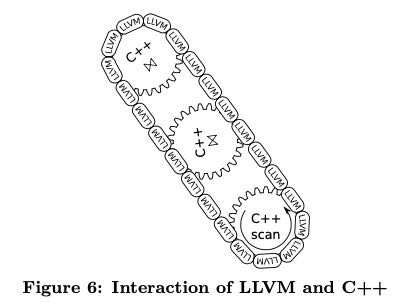

Efficiently Compiling Efficient Query Plans for Modern Hardware
利用现代编译器LLVM，来编译查询计划，提升查询性能
传统的vocalno方式每次调用一次虚函数返回一个tuple的方式，在现代数据库中性能不行，因为现代计算机体系结构中，CPU和Memory带宽已经提升很多倍了，如果每次返回一个tuple那么基本上CPU都是出于闲置状态。使用向量化技术可以减少虚函数的开销，以及提升cache locality，但是副作用就是有比较大的物化成本（写入到内存而不是放在寄存器里面）。而如果我们能将整个计划改写成为pipeline的方式的话，每次循环就可能完成尽可能多的计算，那么就可以极大地节省物化成本。
These observations have led some modern systems to a departure from this pure iterator model, either internally (e.g., by internally decompressing a number of tuples at once and then only iterating over the decompressed data), or externally by producing more than one tuple during each next call [11] or even producing all tuples at once [1]. This block- oriented processing amortizes the costs of calling another operator over the large number of produced tuples, such that the invocation costs become negligible. However, it also eliminates a major strength of the iterator model, namely the ability to pipeline data. Pipelining means that an operator can pass data to its parent operator without copying or otherwise materializing the data. Selections, for example, are pipelining operators, as they only pass tuples around without modifying them. But also more complex operators like joins can be pipelined, at least on one of their input sides. When producing more than one tuple during a call this pure pipelining usually cannot be used any more, as the tuples have to be materialized somewhere to be accessible. This materialization has other advantages like allowing for vectorized operations [2], but in general the lack of pipelining is very unfortunate as it consumes more memory bandwidth.
使用pipeline的方式核心思想，就是要从SQL opeator centric的方式，转变成为data centric的方式。我们不能以operator为算子边界，而应该尽可能地将做operator fusion, 直到某个边界超过这个边界就没有办法做fusion了。这个边界在文章中叫做 pipeline breaker，而a full pipeline breaker则必须将所有的tuples全部取出来进行物化（比如hash join时候的右表数据）
The algebraic operator model is very useful for reasoning over the query, but it is not necessarily a good idea to exhibit the operator structure during query processing itself. In this paper we therefore propose a query compilation strategy that differs from existing approaches in several important ways:
- Processing is data centric and not operator centric. Data is processed such that we can keep it in CPU registers as long as possible. Operator boundaries are blurred to achieve this goal.
- Data is not pulled by operators but pushed towards the operators. This results in much better code and data locality.
- Queries are compiled into native machine code using the optimizing LLVM compiler framework [7].
一旦我们转变思路之后，以data centric的方式来看待SQL的时候，就会发现tuple其实是被不断地推入到pipeline中，而不是像operator centric的方式那样去拉取数据。这里的push/pull更多的是种思考方式，而不是关系到具体实现。这个文中给了一个具体的例子来说明，如果以push的方式来看待SQL应该是什么样子的。
Now the question is, how can we organize query processing such that the data can be kept in CPU registers as long as possible? The classical iterator model is clearly ill-suited for this, as tuples are passed via function calls to arbitrary functions – which always results in evicting the register contents. The block-oriented execution models have fewer passes across function boundaries, but they clearly also break the pipeline as they produce batches of tuples beyond register capacity. In fact any iterator-style processing paradigm that pulls data up from the input operators risks breaking the pipeline, as, by offering an iterator-base view, it has to offer a linearized access interface to the output of an arbitrarily complex relational operator. Sometimes operators could produce a certain small number of output tuples together cheaply, without need for copying.
We therefore reverse the direction of data flow control. Instead of pulling tuples up, we push them towards the con- sumer operators. While pushing tuples, we continue pushing until we reach the next pipeline-breaker. As a consequence, data is always pushed from one pipeline-breaker into another pipeline-breaker. Operators in-between leave the tuples in CPU registers and are therefore very cheap to compute. Fur- thermore, in a push-based architecture the complex control flow logic tends to be outside tight loops, which reduces register pressure. As the typical pipeline-breakers would have to materialize the tuples anyway, we produce execution plans that minimize the number of memory accesses.
接着我们就可以考虑如何使用llvm来实现这个查询计划了。我们肯定不会把整个查询计划全部都用LLVM来生成，因为有很多组件是非常common的使用C++编写，没有必要生成这些代码。代码生成部分，按照我的理解，主要是两个部分：简单的表达式比如 if (a=10)，以及整个逻辑驱动（for循环，查询hashtable, 查询具体表等等）。 实践证明，大部分的99%时间都花费在了LLVM代码上，很少时间在C++代码上，所以这样实现是没有性能问题的。整个过程就好像链条带动齿轮运转的感觉，C++是齿轮，而LLVM则是链条。
Still, one does not want to implement the complete query processing logic in LLVM assembler. First, because writing assembler code is more tedious than using a high-level lan- guage like C++, and second, because much of the database logic like index structures is written in C++ anyway. But one can easily mix LLVM and C++, as C++ methods can be called directly from LLVM and vice versa. (To the com- piler, there is no difference between both types of code, as both result in native machine code and both have strongly typed prototypes.) This results in a mixed execution model which is metaphorically sketched in Figure 6. The complex part of the query processing (e.g., complex data structure management or spilling to disk) is written in C++, and forms the cogwheels in Figure 6. The different operators are connected together by LLVM code, which forms the chain in Figure 6. The C++ “cogwheels” are pre-compiled; only the LLVM “chain” for combining them is dynamically generated. Thereby we achieve very low query compilation times. In the concrete example, the complex part of the scan (e.g., locating data structures, figuring out what to scan next) is implemented in C++, and this C++ code “drives” the execution pipeline. But the tuple access itself and the further tuple processing (filtering, materialization in hash table) is implemented in LLVM assembler code. C++ code is called from time to time (like when allocating more memory), but interaction of the C++ parts is controlled by LLVM. If com- plex operators like sort are involved, control might go back fully into C++ at some point, but once the complex logic is over and tuples have to be processed in bulk, LLVM takes over again. For optimal performance it is important that the hot path, i.e., the code that is executed for 99% of the tuples, is pure LLVM. Calling C++ from time to time (e.g., when switching to a new page) is fine, the costs for that are negligible, but the bulk of the processing has to be done in LLVM. While staying in LLVM, we can keep the tuples in CPU registers all the time, which is about as fast as we can expect to be. When calling an external function all registers have to be spilled to memory, which is somewhat expensive. In absolute terms it is very cheap, of course, as the registers will be spilled on the stack, which is usually in cache, but if this is done millions of times it becomes noticeable.

后面实验也测试了，如果全部生成C++代码，编译时间更长，性能也没有LLVM的好。
文章最后讲到了如何衡量生成代码的code quality，这个倒是值得学习。他们使用callgrind（一个valrgind的扩展）来运行程序拿到profile. 其中指标包括inst, branch, branch miss, l1/d1/d cache miss这些。callgrind运行比较慢（而且不确定是否可以跑多线程），其实现在应该都可以通过linux perf来获得。可以看到相比MonetDB, 各项指标都少了许多，说明生成代码质量还是不错的。